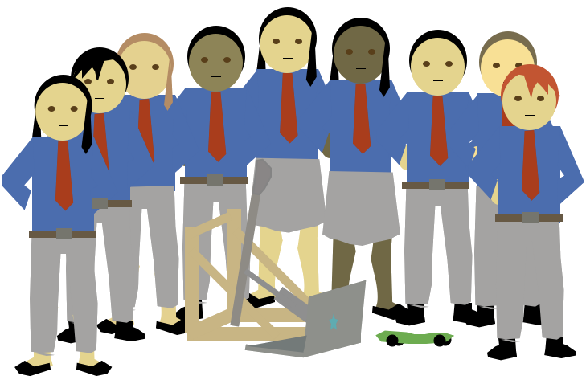

We are a club of students who are learning about technology and other STEM fields (Science, Technology, Engineering, and Math), with the goal of competing at the Technology Student Association (TSA) National Competition. However, getting there is a challenge. Your support is be crucial to our competing. Help us go!
TSA is an organization of over 200,000 students and advisors devoted to helping students explore fields in STEM through over 60 annual competitive events. These events range in topic from website design to building catapults... Learn more
images for each event neededThe opportunities afforded by the wide range of event offerings creates opportunities for students with varied interests to not only explore their interest, but also to branch out to others. Many alumni have gone on to diverse STEM careers because of TSA. Learn more
Anton and Tiffany holding signs saying "Engineer" and whatever Tiffany's doing.The defining moment of the year comes at the end of June when we travel to the TSA National Competition, emulating a professional business conference. Many events take place there... Learn more
images of us winning: System Control and Video Game; can we use middle school awards for IHS TSA members?In Ithaca High School TSA, located in Ithaca, NY, we sign up for and compete in TSA competitive events along with our sister TSA chapter in Ithaca, DeWitt Middle School TSA. Historically, Ithaca High School has been very successful at both the state and national levels, winning a pile of awards at states and four at nationals.
11/30/14 - Ithaca High School TSA member Tristan E. wrote a Ithaca High School TSA a new website (you're on it), with help from Paul F.Y., Freya R. and Jacob S. Learn more
11/19/14 - Chapter officers Zak S., Jacob S., Freya R., and Tristan E., represented Ithaca High School TSA to local teachers, technology businesses, students, and others at the IthacaSTEM Advocates Networking Night... Learn more
10/16/14 - At a meeting of Ithaca High School TSA, Zak S. was elected to the position of president (Supreme Overlord) and Jacob S. was elected vice-president (Junior Supreme Overlord)... Learn more
Our mission to attend the TSA National Conference requires funds that many of our members can't come up with. However, we want everyone to be able to compete, and we'd like your support towards that end—any amount helps. Would you please make a tax-deductible donation so all of us attend the conference? Donate here!